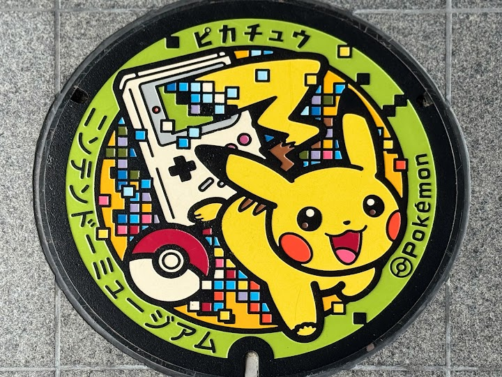
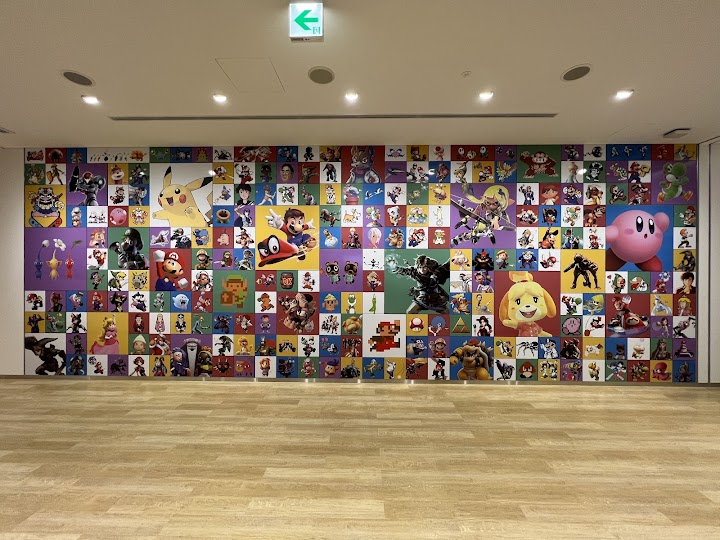
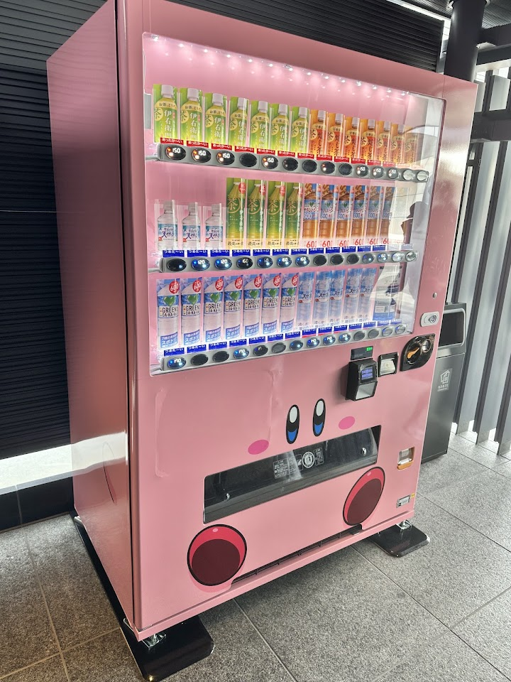
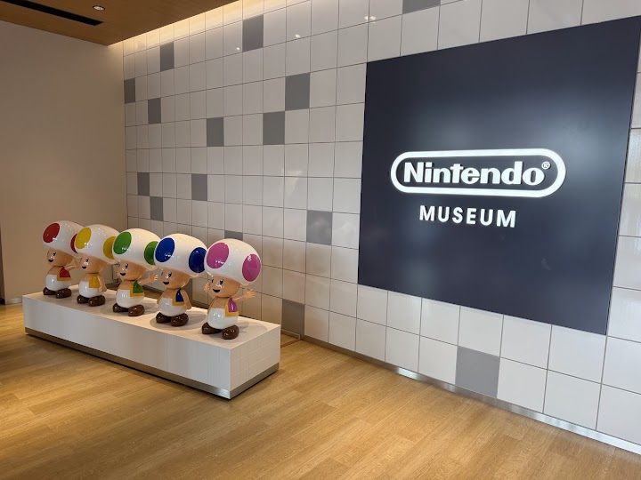

Nintendo Museum
The Nintendo Museum, in Uji near Kyoto, is a museum of the company's history, from early playing cards to modern games, with hands-on play areas. It opened in 2024, needs a reservation chosen by lottery, and visitors rave about it.
Open in Google Maps (street view, more photos and reviews there)





Visitor tips on finding it and getting there
If you like Nintendo... This is the place to go. Buy the tickets with a lot of time ahead to your visit and don't forget your passport / ID or you will not be able to go in. First floor all the interactive cool action were you will enjoy like a kid. Second floor, the museum (no photos and no videos allowed) were you will find all the history of the company. Very interesting area with a lot of surprises of the past of the company. Don't miss the opportunity to go!